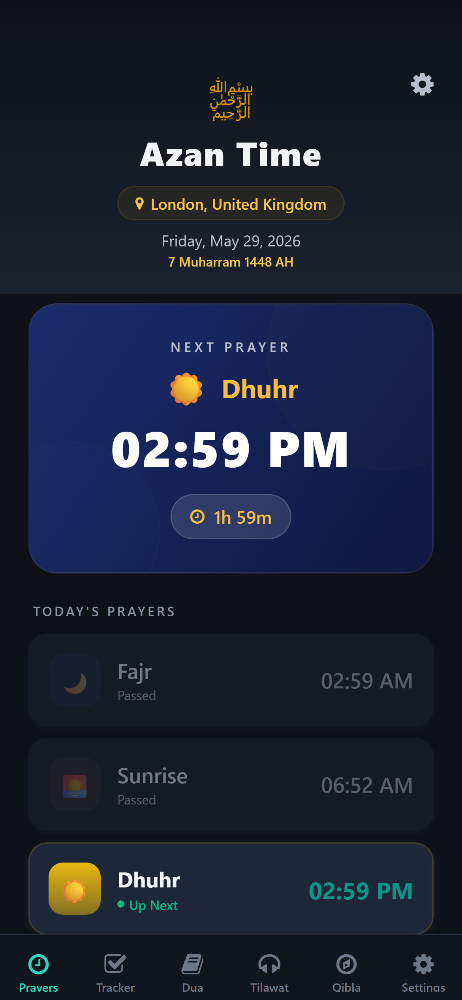
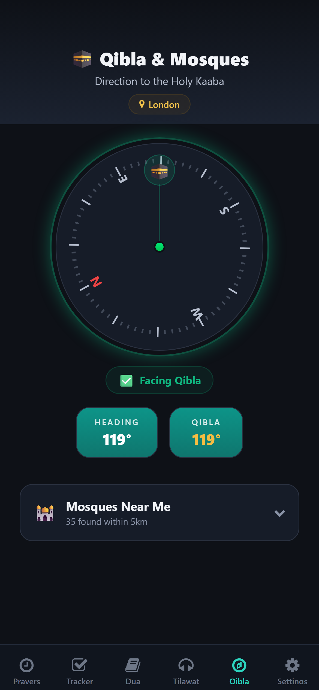
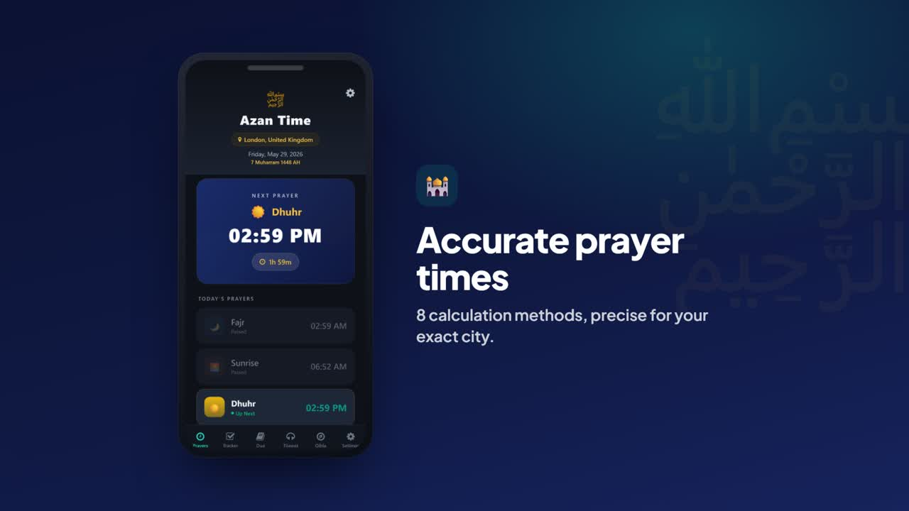
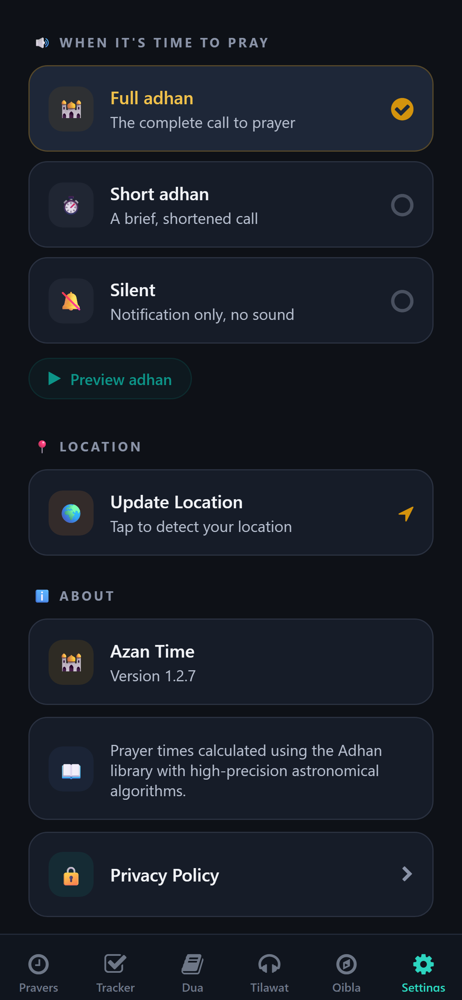
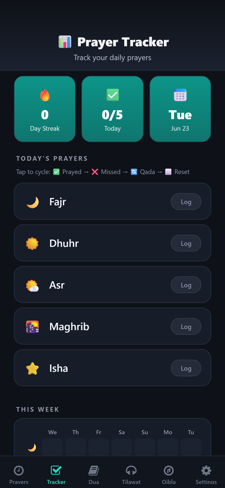
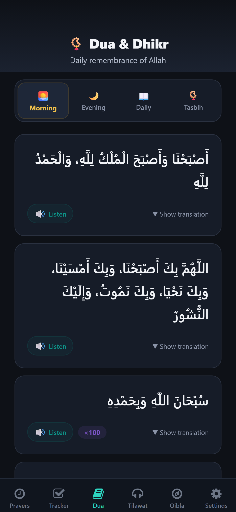
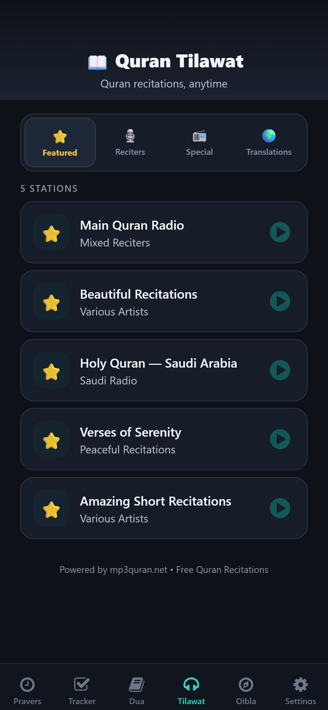

Accurate prayer times, authentic adhan, an offline Qibla compass, duas, tasbih and a prayer streak tracker — all in one calm, beautiful app.


One calm app for prayer times, adhan, Qibla, tracking and dhikr.

Six core tools, one peaceful app — designed to help you pray on time, every day.
High-precision astronomical times for your exact location — matched to your local masjid within about a minute.
Find the direction to the Kaaba from anywhere on Earth — using your phone's magnetometer, no internet required.

Real adhan for every prayer with a simple 3-way choice — full call, a short version, or silent. Fajr keeps its own beautiful adhan.

Build a consistent salah habit. Log each prayer, watch your streak grow, and unlock achievement badges.

Morning and evening adhkar with authentic Arabic, audio and translation — plus a haptic tasbih counter for your dhikr.

Stream beautiful Quran recitations and nasheeds anytime — curated stations from across the Muslim world.
Live Suhoor & Iftar countdowns, auto-detected from the Hijri calendar, with a “Day X of 30” display.
A new verse each day with beautiful Arabic typography and translation — one tap to share with family.
The Islamic date everywhere in the app, with a built-in Hijri ↔ Gregorian converter on the web.
Your location never leaves your device. No account, no tracking, no ads that follow you around the web.
A calm, legible dark theme that follows your system — easy on the eyes for Fajr and Isha.
No subscription, no paywall on the adhan or Qibla. Just the app, the way it should be.
Or browse by country
No subscription. No account. No ads between prayers.